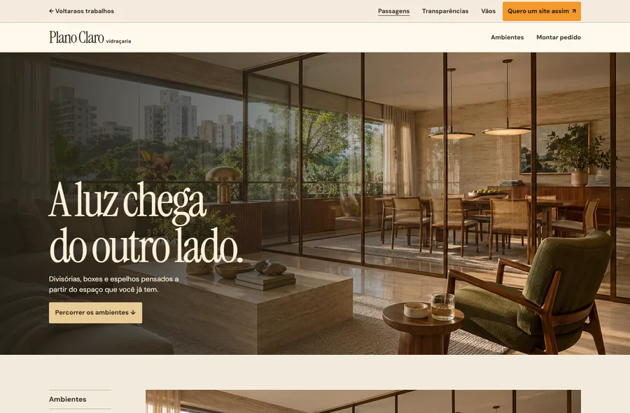
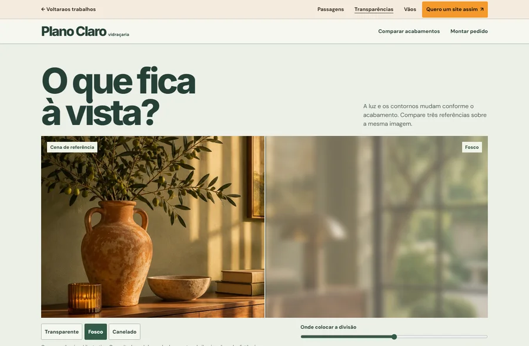
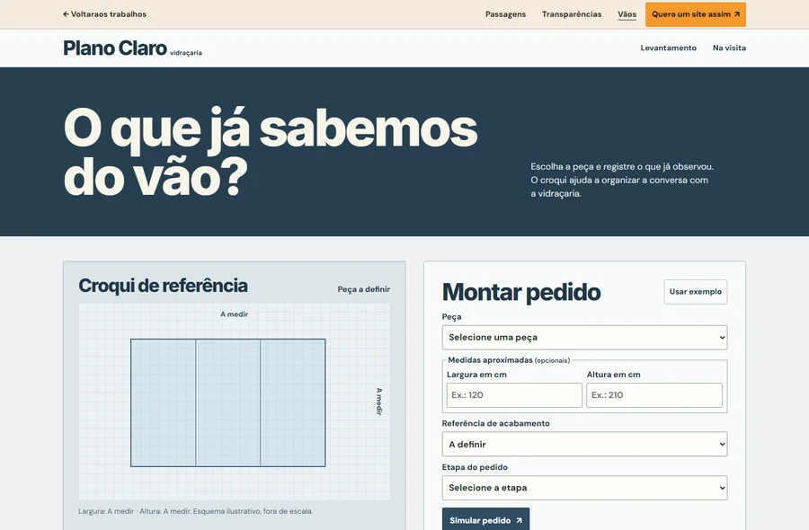

Passagens
Um percurso editorial por sala, banheiro e hall. Escolha a peça a partir do ambiente.
Abrir demonstraçãoTrês maneiras de iniciar um projeto em vidro sob medida. Confira como cada versão conduz a visita e o pedido.

Um percurso editorial por sala, banheiro e hall. Escolha a peça a partir do ambiente.
Abrir demonstração
Uma bancada de luz. Compare, sobre a mesma cena, três acabamentos e leve a escolha ao pedido.
Abrir demonstração
Um caderno de levantamento, com um croqui que acompanha a escolha da peça e as medidas opcionais.
Abrir demonstração